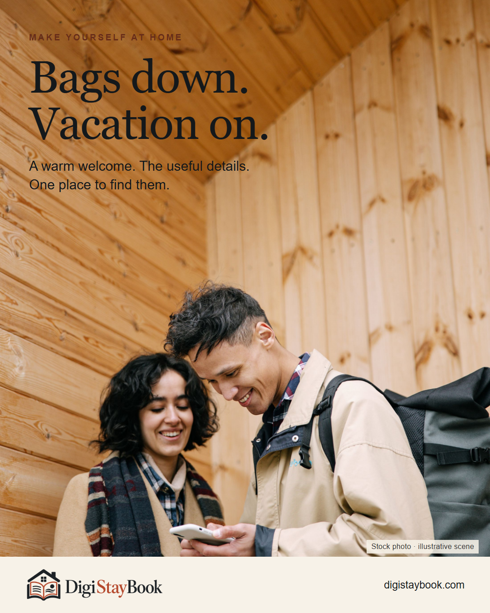
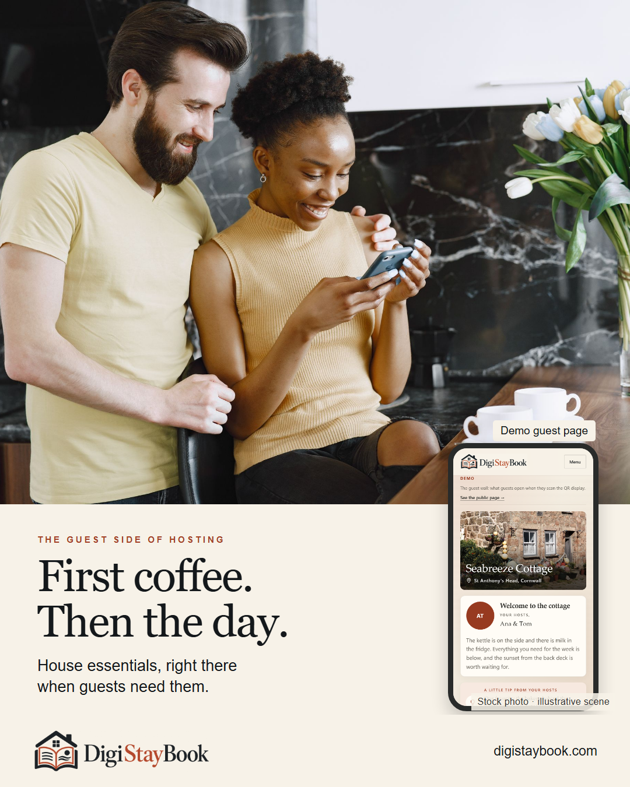
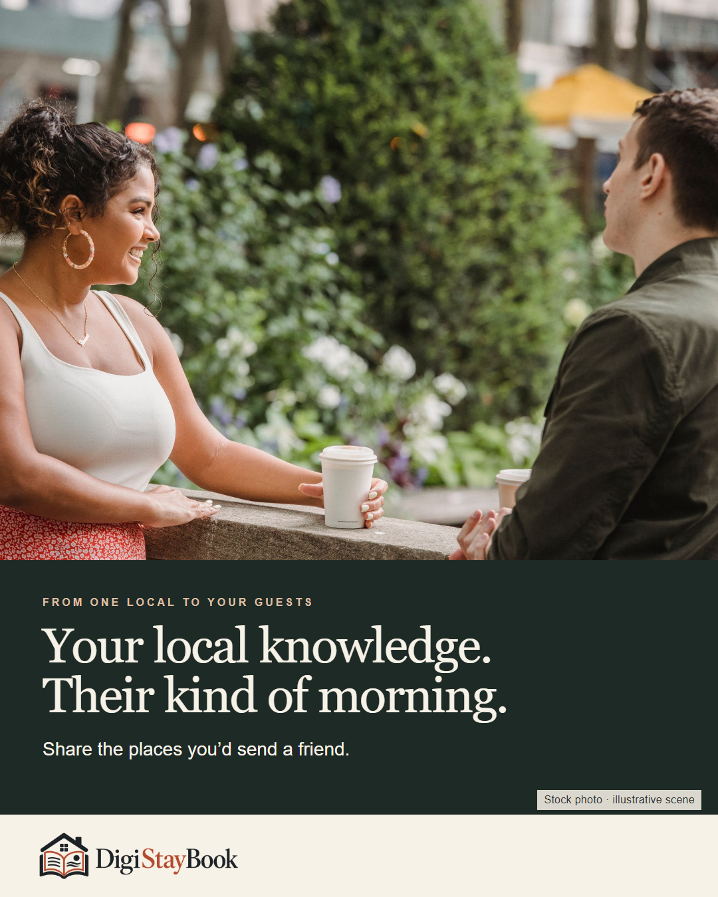
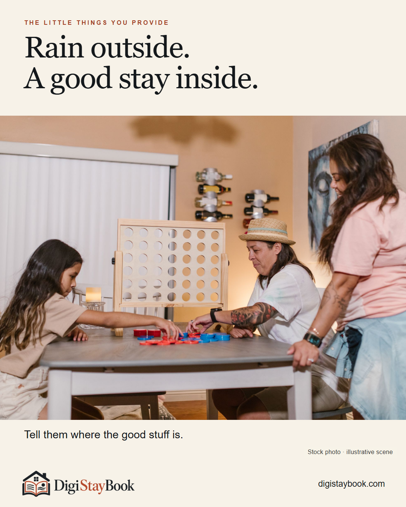
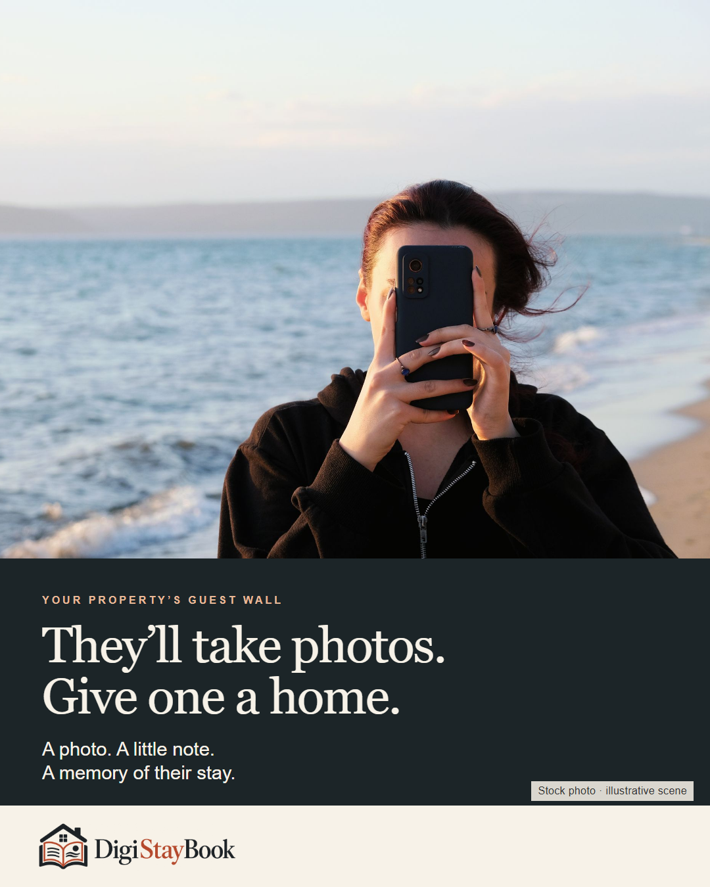
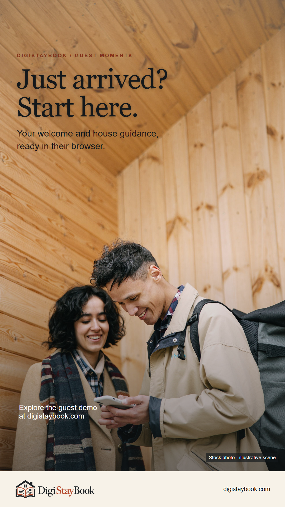
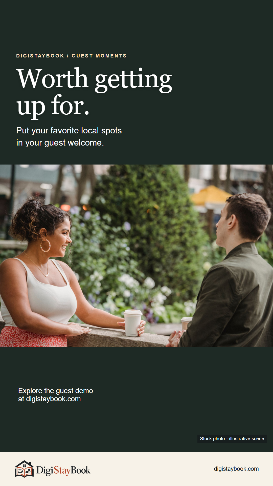
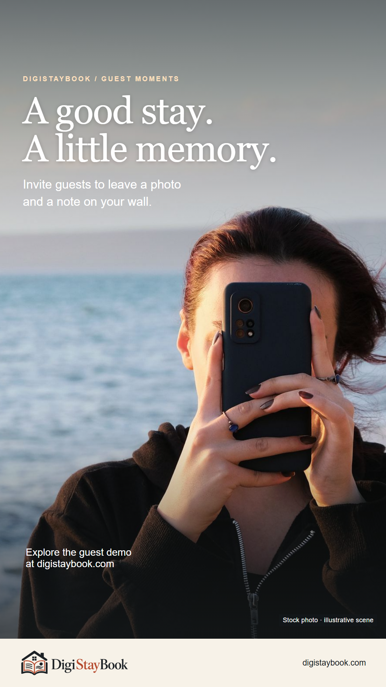

Feed · 1080 × 1350
Bags down. Vacation on.
Stock travelers illustrate arrival. The original phone screen is unchanged; this is not a recorded customer session.

Photo: Ivan S / Pexels

Five photo-led feed posts and three companion Stories. Real photographs, familiar vacation moments and short, useful copy.
8 pieces shown · reviews save in this browser; export to share them.
Stock travelers illustrate arrival. The original phone screen is unchanged; this is not a recorded customer session.
Photo: Ivan S / Pexels

Genuine stock photo. The separate phone-shaped insert is an actual local demo capture from 28 October, labeled Demo; it is not the couple’s phone.
Photo: Gustavo Fring / Pexels

Stock café scene; no specific café, business partnership or customer recommendation is claimed.
Photo: William Fortunato / Pexels

Stock family scene illustrates indoor time together. No weather event or actual DigiStayBook family is documented.
Photo: RDNE Stock project / Pexels

Stock beach scene illustrates taking a vacation photo. No upload, customer endorsement or completed guest contribution is implied.
Photo: Renkgezgini / Pexels

Companion to feed post 01-arrival. Same stock scene deliberately reused within this pair. Add a native link sticker before posting; no fake sticker or QR is baked into the artwork.
Photo: Ivan S / Pexels

Companion to feed post 03-local. Same stock scene deliberately reused within this pair. Add a native link sticker before posting; no fake sticker or QR is baked into the artwork.
Photo: William Fortunato / Pexels

Companion to feed post 05-memory. Same stock scene deliberately reused within this pair. Add a native link sticker before posting; no fake sticker or QR is baked into the artwork.
Photo: Renkgezgini / Pexels